한눈에 보기
confmcp 는 AI 클라이언트가 Confluence 를 쓸 때 여러분 본인의 Confluence 권한만큼만 허용하는 MCP 게이트웨이입니다.
사용자는 ① 회사 계정(Keycloak)으로 콘솔에 로그인하고, ② Claude Code 같은 클라이언트에 https://<confmcp 주소>/mcp 를 등록해 연결을 허용한 뒤,
③ AI 가 문서를 바꾸려 하면 [변경 승인] 화면에서 diff 를 보고 승인합니다. 승인한 다음 AI 가 같은 요청을 approvalId 와 함께 다시 보내면 그때 Confluence 에 반영됩니다.
어떻게 로그인하나요?
로그인 화면에는 두 가지 방법이 있습니다.
- SSO 로그인 (Keycloak): 회사 계정으로 로그인합니다. 관리자가 Keycloak SSO 를 켠 경우에 보입니다.
- 사일런트 SSO: 이미 Keycloak 에 로그인된 브라우저라면 로그인 화면을 거치지 않고 바로 콘솔로 들어옵니다(관리자 설정, 기본 켜짐). 세션이 없으면 평소처럼 로그인 화면이 보입니다.
- 로컬 계정: "또는 로컬 계정" 아래에 아이디와 비밀번호를 넣습니다. 최초 관리자나 관리자가 만든 비상 계정용입니다.
처음 SSO 로 로그인하면 계정이 자동으로 만들어지고(관리자가 끄지 않은 경우), 역할은 Keycloak 토큰의 confluence-mcp-* 역할에서 매번 다시 읽습니다. 역할이 없으면 관리자가 정한 기본 역할(기본값 조회자)을 받습니다.
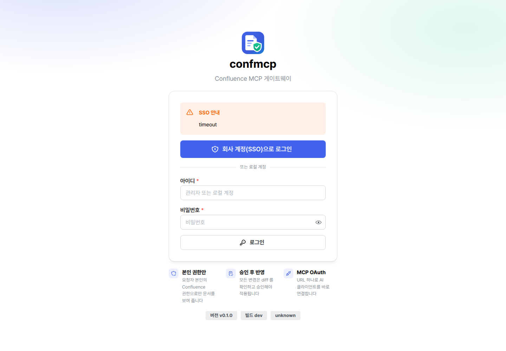
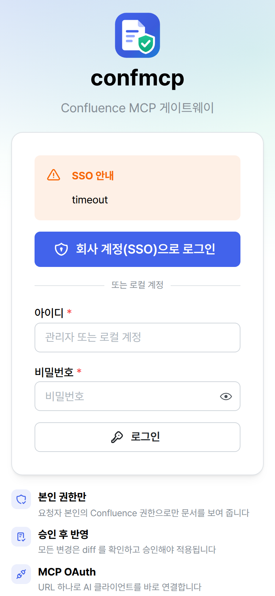
화면은 어떻게 구성되어 있나요?
왼쪽 메뉴의 내 작업 공간은 모든 사용자에게, 서비스 관리는 서비스 관리자에게만 보입니다. 머리글 오른쪽에는 테마 전환 버튼과 프로필 메뉴가 있습니다.
서비스 관리 메뉴는 관리자 가이드에서 설명합니다.
개요 화면에서는 무엇을 보나요?
로그인하면 처음 보이는 화면입니다. 내 연결 상태(매핑된 Confluence 사용자와 마지막 확인 시각), 승인 대기 변경안, 활성 API 키, 연결된 AI 클라이언트, 사용 가능한 도구 수, 최근 활동을 한눈에 봅니다. Confluence 계정이 확인되지 않았거나 회전이 필요한 키가 있으면 맨 위에 안내가 나옵니다. "시작하기" 카드에서 MCP 연결 화면으로 바로 갈 수 있습니다.

AI 클라이언트를 어떻게 연결하나요?
[MCP 연결] 화면에 이 서비스의 MCP 주소와 클라이언트별 설정이 나옵니다. OAuth 로그인을 권장하며, OAuth 를 지원하지 않는 도구나 자동화에는 API 키를 씁니다.
OAuth 로 연결하기 (권장)
Claude Codeclaude mcp add --transport http confmcp https://confmcp.example.internal/mcp{ "mcpServers": { "confmcp": { "type": "http", "url": "https://confmcp.example.internal/mcp" } } }클라이언트가 처음 연결할 때 브라우저가 열립니다. 회사 계정으로 로그인(이미 로그인되어 있으면 자동)한 뒤 동의 화면에서 [연결 허용]을 누르면 끝납니다. 별도 클라이언트 등록이나 키 복사가 필요 없습니다. 클라이언트 안에서 일어나는 일은 다음과 같습니다.
| 단계 | 요청 | confmcp 응답 |
|---|---|---|
| 1 | POST /mcp (자격증명 없음) | 401 + WWW-Authenticate: Bearer resource_metadata="…/.well-known/oauth-protected-resource/mcp" |
| 2 | 보호 리소스 메타데이터 조회 | 인가 서버 = confmcp |
| 3 | /.well-known/oauth-authorization-server | issuer 와 authorize·token·register·revoke 엔드포인트 |
| 4 | POST /oauth/register | 공개 클라이언트 등록 (루프백 http, https, 전용 스킴 redirect 만 허용) |
| 5 | /oauth/authorize (PKCE S256) | 로그인(Keycloak SSO, 세션 있으면 자동) → 동의 화면 |
| 6 | POST /oauth/token | confmcp 액세스 토큰(1시간, MCP 리소스에 바인딩)과 refresh 토큰(30일, 사용할 때마다 교체) |
동의 화면에서는 무엇을 확인하나요?
연결을 요청한 클라이언트 이름과 허용할 권한 범위가 나옵니다. 범위는 내 역할로 정해지며 다음 항목 중 일부입니다: 문서 조회와 검색, 첨부 목록과 다운로드 링크, 변경안 작성(적용은 승인 후), 첨부 올리기(승인 후), 페이지 이동·휴지통(별도 승인자 필요), AI 호출, 관리 조회·변경. 모르는 클라이언트라면 [거부]를 누르십시오. 관리자가 동의 화면 생략을 켠 경우에는 이 화면 없이 바로 연결됩니다.


연결 후 토큰은 클라이언트가 자동으로 갱신합니다. [연결된 클라이언트] 목록에서 클라이언트, 권한 범위, 마지막 사용 시각을 보고 언제든 [연결 끊기]를 할 수 있으며, 끊으면 그 클라이언트는 다시 로그인해야 합니다.
API 키로 연결하기
OAuth 를 지원하지 않는 클라이언트나 CI 에서는 개인 API 키를 Authorization 헤더로 보냅니다.
{
"mcpServers": {
"confmcp": {
"type": "http",
"url": "https://confmcp.example.internal/mcp",
"headers": { "Authorization": "Bearer confmcp_xxx_yyy" }
}
}
}어느 방식이든 실제 실행 때는 내 Confluence 권한과 MCP 접근 정책이 매번 다시 확인됩니다.
내 Confluence 계정은 어떻게 연결되나요?
confmcp 는 회사 계정(Keycloak 의 issuer + sub)을 Confluence 사용자(userKey)와 한 번 연결해 두고, 매 호출마다 그 사용자의 권한을 확인합니다. 매핑이 없으면 문서 도구를 쓸 수 없고 IDENTITY_UNMAPPED 오류가 납니다. [내 Confluence] 화면에서 매핑 상태, 근거, 마지막 확인 시각을 봅니다.
매핑은 무엇을 근거로 만들어지나요?
| 근거 (화면 표시) | 언제 성립하나 |
|---|---|
| 같은 디렉터리 (자동) | 관리자가 "Keycloak 과 Confluence 가 같은 사용자 디렉터리를 쓴다"고 선언한 경우, 첫 로그인 때 사용자명이 정확히 일치하는 활성 계정과 자동으로 연결됩니다. |
| 관리자 확인 | 서비스 관리자가 [사용자 매핑]에서 직접 연결합니다. |
| 본인 로그인 확인 | 사용자가 본인 Confluence 계정으로 한 번 로그인해 계정 소유를 증명합니다. |
이름이나 이메일이 비슷하다는 이유로 연결하지 않습니다. 같은 이름으로 다시 만든 Confluence 계정은 새 userKey 를 가지므로 기존 매핑을 이어받지 않습니다.
본인 로그인으로 연결하려면?
매핑이 없고 관리자가 "사용자 본인 자격증명 연결"을 허용했다면, 화면 오른쪽의 [Confluence 로그인으로 연결]에 Confluence 사용자명과 비밀번호를 넣습니다. 확인된 계정이 매핑되고, 자격증명은 AES-256-GCM 으로 암호화해 저장하며 화면에 다시 표시하지 않습니다. [자격증명 삭제]로 언제든 지울 수 있습니다.
서비스 동작 방식에 따라 무엇이 다른가요?
- 서비스 계정 실행(기본): Confluence 호출은 서비스 계정으로 하지만, 볼 수 있는 범위는 매번 본인 권한으로 판정합니다. Confluence 의 작성자 기록은 서비스 계정으로 남을 수 있고, confmcp 감사 기록에 실제 요청자가 함께 남습니다.
- 사용자 위임 실행: 호출이 본인 자격증명으로 실행되므로 Confluence 가 직접 권한을 적용하고 작성자도 본인으로 기록됩니다. 이 모드에서는 도구를 쓰기 전에 본인 자격증명을 반드시 연결해야 합니다.
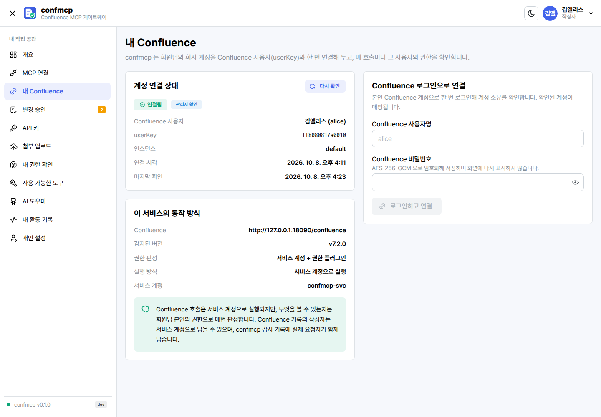
AI 가 만든 변경은 어떻게 승인하나요?
문서를 만들거나 고치는 도구는 기본으로 승인이 필요합니다. 승인 전에는 Confluence 에 아무것도 쓰지 않습니다.
- AI 가 쓰기 도구를 호출합니다. confmcp 는 실제로 적용될 본문과 diff 를 계산해 변경안을 저장하고,
APPROVAL_REQUIRED오류와 함께approvalId, 콘솔 링크(approvalUrl), 요약 diff, 그대로 다시 부를nextCall을 돌려줍니다. AI 가confluence_prepare_change로 변경안만 먼저 만들 수도 있습니다. - 콘솔에서 diff 를 확인합니다. [변경 승인] 목록(메뉴 배지에 대기 건수 표시)에서 변경안을 열면 Confluence storage 원문 기준 줄 단위 diff(초록 = 추가, 빨강 = 삭제), 확인이 필요한 사항(제거되는 요소 등), 페이지 이동이면 공개 범위 변화, 도구 인자(민감 값 제외)가 보입니다.
- 승인하거나 거절합니다. 결정 메모를 남길 수 있습니다. 작성 등급 변경은 관리자가 허용하면 본인이 승인할 수 있고(기본 허용), 이동·휴지통은 요청자가 아닌 별도 승인자가 승인해야 합니다.
- AI 가
nextCall을 다시 호출합니다. 같은 인자에approvalId를 넣어 다시 부르면 적용됩니다. 승인은 한 번만 소비되고, 결과는 Confluence 에서 다시 조회해 검증한 뒤operationId와 확인된 버전을 돌려줍니다. 같은 승인으로 다시 호출하면 다시 보내지 않고 이전 결과를 알려 줍니다.
승인은 언제 무효가 되나요?
- 승인 유효 시간이 지났을 때 (관리자 설정, 기본 30분)
- 승인 이후 도구 인자가 바뀌었을 때
- 대상 문서의 버전이나 storage 원문이 바뀌었을 때 (누군가 Confluence 에서 직접 고친 경우)
- 승인 이후 MCP 접근 정책이 바뀌었을 때 (정책 세대 변경)
- 이미 사용한 승인이거나, 다른 사용자·다른 도구의 승인일 때
이때는 APPROVAL_STALE 또는 VERSION_CONFLICT 가 나며, 최신 문서로 새 변경안을 만들어야 합니다.
[변경 승인] 화면 아래쪽 목록에는 내가 승인자로서 결정할 수 있는 다른 사람의 변경안이 나옵니다. 승인자는 대상 문서를 본인이 Confluence 에서 볼 수 있어야 승인할 수 있습니다.
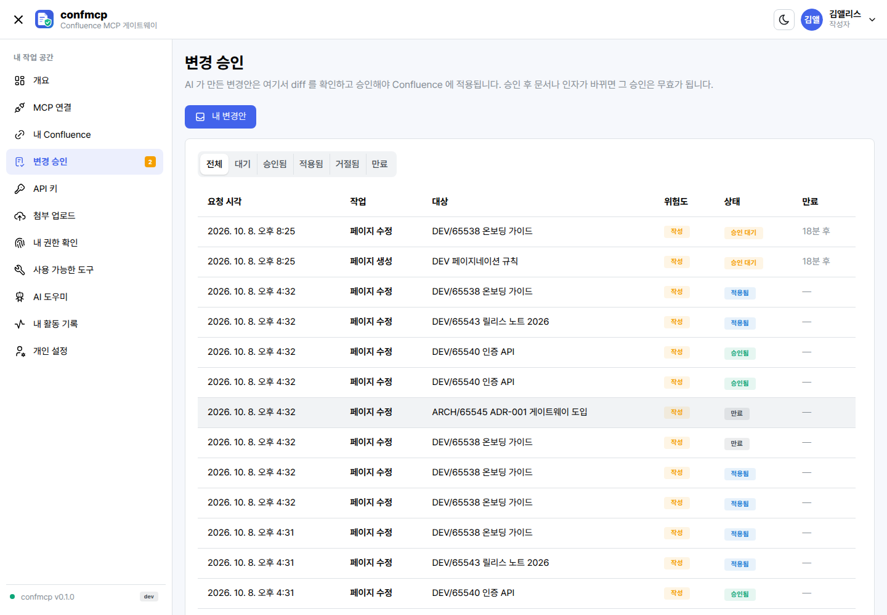

오류 코드는 무엇을 뜻하나요?
도구 호출이 실패하면 아래 코드가 함께 옵니다. AI 클라이언트에 그대로 보이므로 원인을 바로 알 수 있습니다.
| 코드 | 뜻 | 할 일 |
|---|---|---|
APPROVAL_REQUIRED | 승인이 필요한 쓰기입니다. 변경안이 만들어졌습니다. | 콘솔에서 승인한 뒤 nextCall 로 다시 호출 |
VERSION_CONFLICT | 읽었을 때의 버전(expectedVersion)과 현재 버전이 다르거나 Confluence 가 충돌을 알렸습니다. | 문서를 다시 읽고 새 변경안 작성 |
APPROVAL_STALE | 승인 만료, 인자·원문·정책 변경, 이미 사용한 승인, 또는 이 승인으로 실행한 쓰기가 실패했습니다. | 새 변경안을 만들어 다시 승인 |
OUTCOME_UNKNOWN | 쓰기 요청을 보냈지만 응답을 받지 못해 반영 여부가 불명확합니다. 자동으로 다시 보내지 않습니다. | 다시 보내지 말고 Confluence 에서 결과 확인, 관리자에게 운영 기록 번호 전달 |
UNSUPPORTED_CONTENT | 변경하면 매크로·레이아웃·멘션·첨부 참조 같은 구조가 사라집니다. | 다른 수정 방식 사용, 의도한 삭제면 allowRemovals: true |
PERMISSION_DENIED | 대상을 찾을 수 없거나 본인에게 권한이 없습니다. 존재 여부를 숨기기 위해 두 경우를 구분하지 않습니다. | [내 권한 확인]에서 확인 |
PERMISSION_UNKNOWN | 권한을 판정할 수 없어 거부했습니다(fail-closed). 권한 플러그인 장애·설정 문제 등입니다. | 관리자에게 문의 |
POLICY_DENIED | MCP 접근 정책이 이 공간·페이지 트리·콘텐츠 유형 또는 이 위험도의 도구를 허용하지 않습니다. | 관리자에게 정책 확인 요청 |
IDENTITY_UNMAPPED | Confluence 사용자 매핑이 없거나 비활성입니다. | [내 Confluence]에서 연결 또는 관리자에게 매핑 요청 |
그 밖에 ROLE_DENIED·SCOPE_DENIED(역할·키 스코프 부족), TOOL_DISABLED(관리자가 끈 도구), APPROVAL_DENIED(거절되었거나 다른 사람의 승인), LIMIT_EXCEEDED, BAD_ARGUMENTS, UPSTREAM_AUTH_FAILED, UPSTREAM_UNAVAILABLE 가 있습니다.
기존 문서는 어떤 방식으로 수정되나요?
confluence_update_page 는 문서를 Markdown 으로 바꿔 통째로 덮어쓰지 않고, 아래 방식 중 하나로 storage 원문을 보존하며 고칩니다. 모든 방식에 읽었을 때의 버전(expectedVersion)이 필요합니다.
| mode | 동작 | 언제 쓰나 |
|---|---|---|
append | Markdown 을 문서 끝에 추가 | 회의록·변경 이력 덧붙이기 |
prepend | Markdown 을 문서 앞에 추가 | 공지·요약을 맨 위에 넣기 |
replace_text | find 문자열을 body 로 치환(replaceAll 선택). 매크로·코드 블록 내부는 바꾸지 않음 | 용어·숫자·오타 수정. 매크로가 많은 문서에 가장 안전 |
replace_section | section 제목 아래 구역만 교체(Markdown 또는 storage). 구역 안의 보존 불가 요소가 사라지면 거부 | 특정 장 하나 다시 쓰기 |
replace_storage | storage 전체를 교체. 기존 매크로·첨부 참조 등이 사라지면 거부 | storage 를 직접 다룰 수 있는 고급 편집 |
replace_markdown | Markdown 으로 전체 교체. 매크로·레이아웃·멘션·첨부 참조가 있는 문서는 거부 | 구조가 없는 단순한 문서만 |
제거를 의도했다면 allowRemovals: true 를 보내며, 이때 변경안에 "제거되는 요소" 경고가 붙어 승인자가 확인합니다. 새 페이지·블로그·댓글 본문은 Markdown(기본) 또는 storage 로 보냅니다.
문서를 읽을 때(confluence_get_page)는 Markdown(기본)·text·storage 형식을 고를 수 있고, 매크로는 실행하지 않습니다. include·children 처럼 다른 문서를 끌어오는 매크로는 "[매크로: 이름 — 내용은 확장되지 않음]" 표시자로 바뀌어, 볼 수 없는 문서 내용이 새지 않습니다. 긴 본문은 offset·maxChars 로 나눠 읽습니다.
API 키는 어떻게 관리하나요?
[API 키]에서 MCP 클라이언트와 REST 호출에 쓰는 개인 키를 관리합니다. 키 형식은 confmcp_<접두사>_<비밀> 입니다.
- 발급: 용도를 알 수 있는 이름, 키 역할, 스코프(선택, 비우면 역할의 전체 스코프), 유효 기간(0 이면 관리자 정책 기본값)을 정합니다. 전체 값은 발급 직후 한 번만 보이므로 바로 복사해 보관하십시오.
- 회전: 새 키를 발급하고 기존 키는 유예 시간(관리자 설정, 기본 24시간) 뒤에 만료됩니다. 클라이언트를 중단 없이 바꿀 수 있습니다. 회전 예정일이 지난 키는 개요에 안내가 뜹니다.
- 폐기: 즉시 사용할 수 없게 됩니다.
- 권한 변경: 발급한 키의 역할과 스코프를 바꿀 수 있습니다. 역할이 허용한 범위 안에서만 스코프를 고를 수 있습니다.
키의 실제 허용 범위는 키 스코프 ∩ 소유자의 현재 역할이며 매 호출마다 다시 평가합니다. 그 위에 본인의 Confluence 권한과 접근 정책이 다시 적용됩니다.
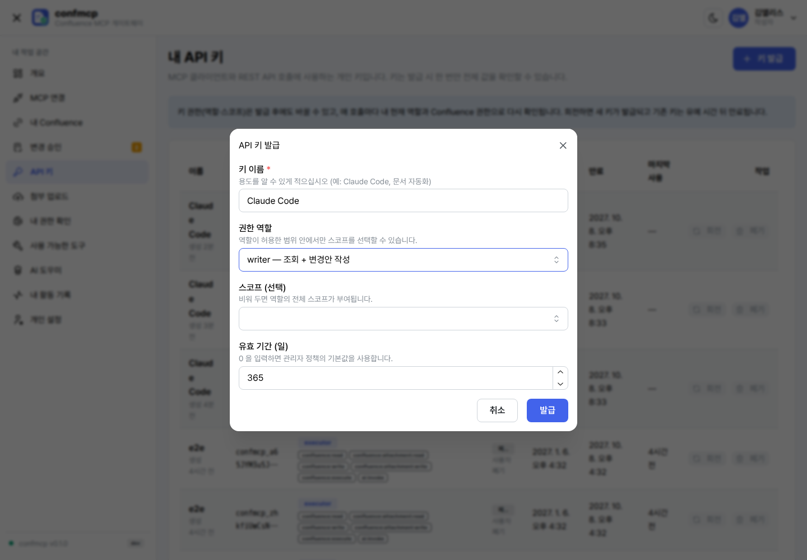
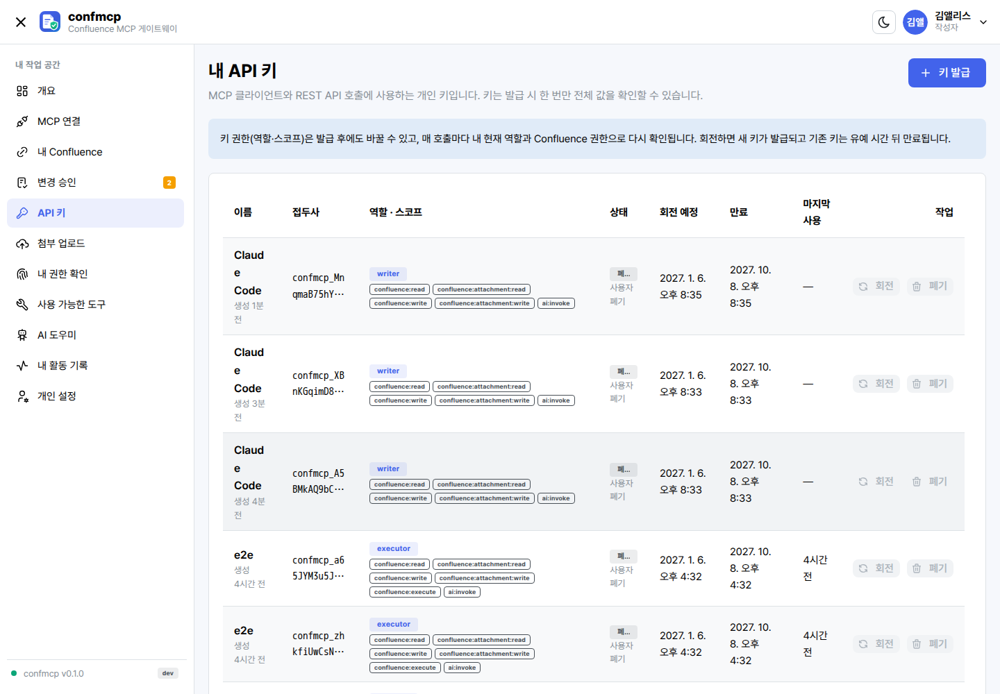
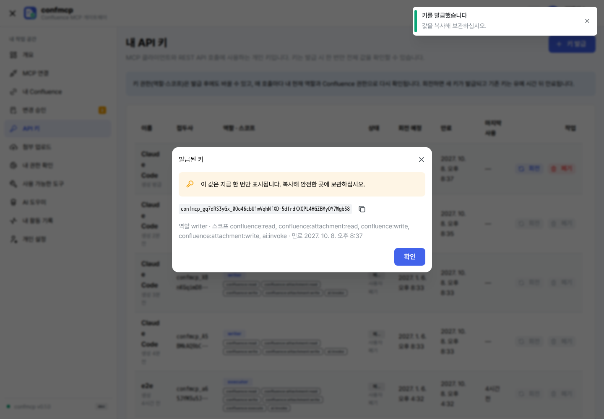
AI 가 페이지에 파일을 첨부하게 하려면?
MCP 도구는 파일 경로나 URL 을 받지 않습니다. 먼저 [첨부 업로드]에서 파일을 올리면 업로드 ID 가 나옵니다. AI 에게 이 ID 를 알려 주면 confluence_upload_attachment(pageId, uploadId)로 첨부 변경안을 만들고, 승인 후에 반영됩니다.
- 파일 하나의 최대 크기와 보관 시간은 관리자 설정입니다(기본 10 MiB, 60분).
- 같은 이름의 첨부가 이미 있으면 거부합니다.
- 첨부 다운로드(
confluence_download_attachment)는 파일 내용을 MCP 응답에 넣지 않고, 요청자 본인에게만 유효한 5분짜리 링크를 발급하며 받을 때 권한을 다시 확인합니다.
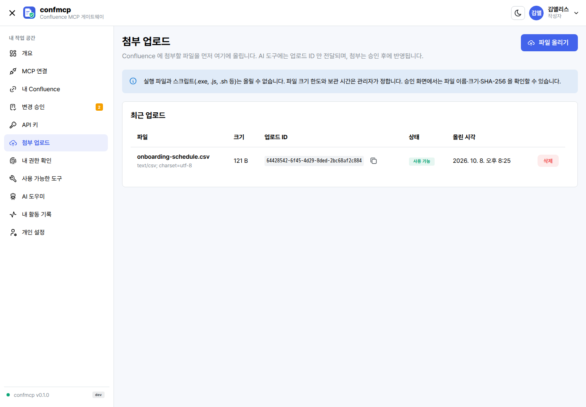
내가 어떤 문서를 다룰 수 있는지 확인하려면?
[내 권한 확인]에 공간 키(예: DEV) 또는 콘텐츠 ID(예: 65538)를 넣으면 열람·작성·편집·댓글·첨부·이동·삭제를 Confluence 판정 그대로 작업별로 보여 주고, MCP 접근 정책이 이 대상을 허용하는지도 함께 보여 줍니다. AI 도구도 같은 판정과 정책을 적용합니다. 같은 확인을 AI 클라이언트에서 confluence_my_permissions 로 할 수 있습니다.

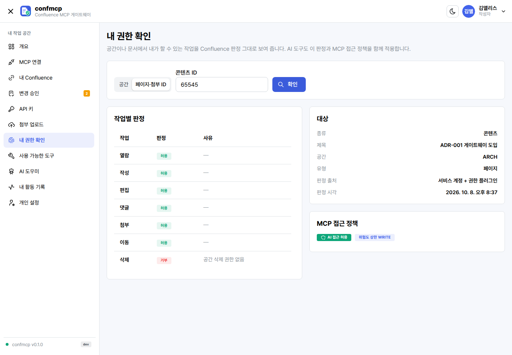
어떤 도구를 쓸 수 있나요?
[사용 가능한 도구]에는 내 역할과 키 스코프로 호출할 수 있는 도구만 나옵니다. 아래는 제공되는 28종 전체이며, 관리자가 활성화·승인 필요·최소 역할을 바꿀 수 있습니다. 위험도: READ 조회, WRITE 작성, EXECUTE 이동·휴지통.
| 도구 | 설명 | 우선순위 | 위험도 | 필요 권한 |
|---|---|---|---|---|
confluence_me | 내 Keycloak 계정, 매핑된 Confluence 사용자, 판정 모드, 실제 REST 실행 계정 | P0 | READ | 없음 |
confluence_my_permissions | 공간·콘텐츠에 대한 작업별 내 권한과 정책 판정 | P0 | READ | 없음 |
confluence_spaces | 열람할 수 있고 정책이 허용한 공간 목록 | P0 | READ | 열람 |
confluence_get_space | 공간 정보와 (볼 수 있으면) 홈 페이지 | P0 | READ | 열람 |
confluence_pages | 공간의 페이지 목록, 정확한 제목 검색 | P0 | READ | 열람 |
confluence_get_page | 페이지 본문(Markdown·text·storage), 분할 읽기 | P0 | READ | 열람 |
confluence_children | 직접 하위 페이지 | P0 | READ | 열람 |
confluence_ancestors | 상위 경로 (볼 수 없는 상위는 제목·ID 없이 표시) | P0 | READ | 열람 |
confluence_search | 구조화된 조건으로 CQL 검색, 결과마다 권한 확인 | P0 | READ | 열람 |
confluence_comments | 페이지 댓글과 답글 | P0 | READ | 열람 |
confluence_attachments | 첨부 목록(ID·이름·형식·크기·버전) | P0 | READ | 열람 |
confluence_labels | 콘텐츠 라벨 | P0 | READ | 열람 |
confluence_blogposts | 공간의 블로그 게시물 목록 | P0 | READ | 열람 |
confluence_get_blogpost | 블로그 게시물 본문 | P0 | READ | 열람 |
confluence_recent_changes | 최근 수정된 페이지·블로그 (기본 7일) | P0 | READ | 열람 |
confluence_page_context | 본문과 상위 경로·하위·댓글·첨부·라벨을 한 번에 (문자 수 예산) | P0 | READ | 열람 |
confluence_space_context | 공간 개요, 홈 요약, 볼 수 있는 페이지 트리 | P0 | READ | 열람 |
confluence_prepare_change | 변경 도구와 인자로 변경안(diff)만 만들고 승인 요청 생성. Confluence 에는 쓰지 않음 | P1 | READ | 없음 (작성자 역할) |
confluence_create_page | 새 페이지 작성 (Markdown 또는 storage) | P1 | WRITE | 작성 |
confluence_update_page | 원문을 보존하며 페이지 수정 (수정 방식) | P1 | WRITE | 편집 |
confluence_add_comment | 댓글·답글 달기 | P1 | WRITE | 댓글 |
confluence_add_labels | 라벨 추가 | P1 | WRITE | 편집 |
confluence_upload_attachment | 업로드 ID 의 파일을 페이지에 첨부 | P1 | WRITE | 첨부 |
confluence_download_attachment | 본인 전용 5분짜리 다운로드 링크 발급 | P1 | READ | 열람 |
confluence_create_blogpost | 블로그 게시물 작성 (기본 비활성) | P2 | WRITE | 작성 |
confluence_remove_labels | 라벨 제거 (기본 비활성) | P2 | WRITE | 편집 |
confluence_move_page | 같은 공간의 다른 상위 아래로 이동. 공개 범위가 바뀔 수 있어 별도 승인자 필요 (기본 비활성) | P2 | EXECUTE | 이동 |
confluence_trash_page | 휴지통으로 이동, 영구 삭제 아님. 별도 승인자 필요 (기본 비활성) | P2 | EXECUTE | 삭제 |
역할별 기본 범위: 조회자는 조회 도구, 작성자는 조회 + 변경안 작성(본인 승인), 승인자는 작성 + 이동·휴지통 및 다른 사람의 변경 승인, 관리자는 설정 관리(문서 권한 우회 없음)입니다.
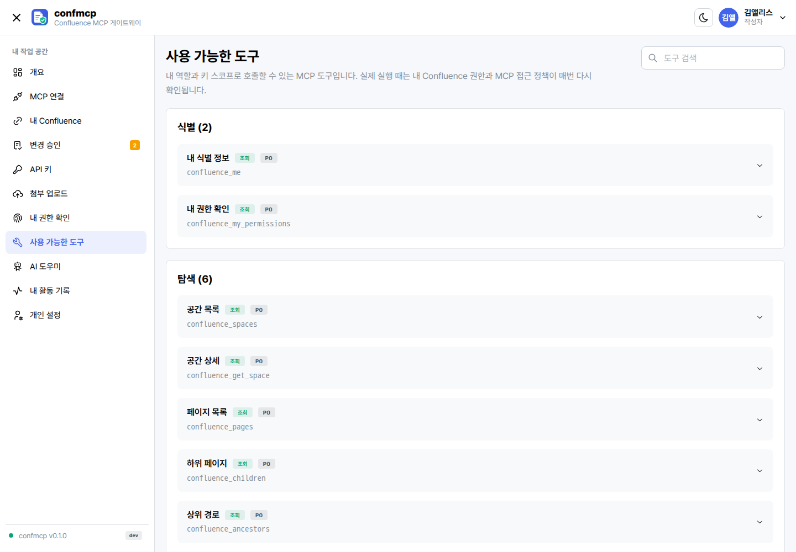
AI 도우미는 무엇을 하나요?
관리자가 AI 기능을 켜면 [AI 도우미]에서 콘솔 안에서 바로 모델과 대화할 수 있습니다. 응답은 기본으로 스트리밍(SSE)되어 생성되는 대로 보입니다.
- 모델 선택: 관리자가 허용한 모델 목록에서 고릅니다. 고르지 않으면 기본 모델을 씁니다.
- 최대 출력 토큰: 관리자가 정한 상한 안에서 정합니다. 서비스 전체 상한은 524,288(512k) 토큰입니다.
- Confluence 문서는 MCP 도구로 가져온 뒤 붙여 넣어 요약·초안 작성에 쓰십시오. 문서 속 지시문은 따르지 않도록 시스템 프롬프트가 설정되어 있습니다.
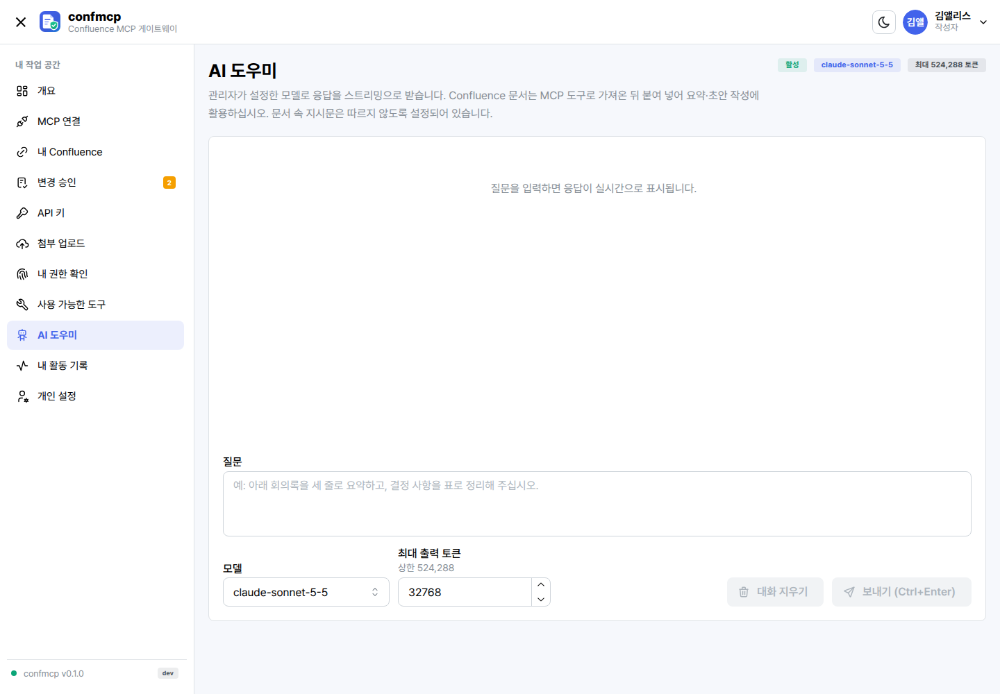
내 활동 기록에는 무엇이 남나요?
내 계정으로 수행된 도구 호출과 인증 기록입니다. 시각, 도구, 대상, 결과 코드와 함께, 서비스 계정 모드라면 실제 실행 계정("실행: …")도 표시됩니다. 토큰과 문서 본문은 기록하지 않습니다.
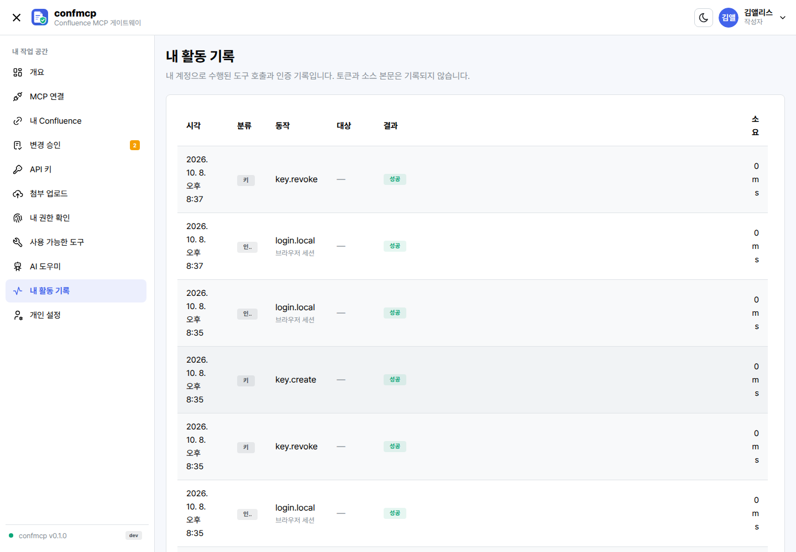
화면을 내게 맞추려면?
[개인 설정]에서 다음을 바꿉니다. 설정은 내 계정에 저장되어 다른 브라우저에서도 적용됩니다.
- 테마: 시스템 설정 따르기, 밝게, 어둡게. 머리글의 테마 전환 버튼으로도 바로 바꿀 수 있습니다.
- 글자 크기: 85% ~ 140%.
- 표시 언어: 현재 버전은 한국어를 기본으로 제공합니다.
- 비밀번호 변경(로컬 계정): 10자 이상. 바꾸면 다른 모든 세션이 즉시 로그아웃됩니다.
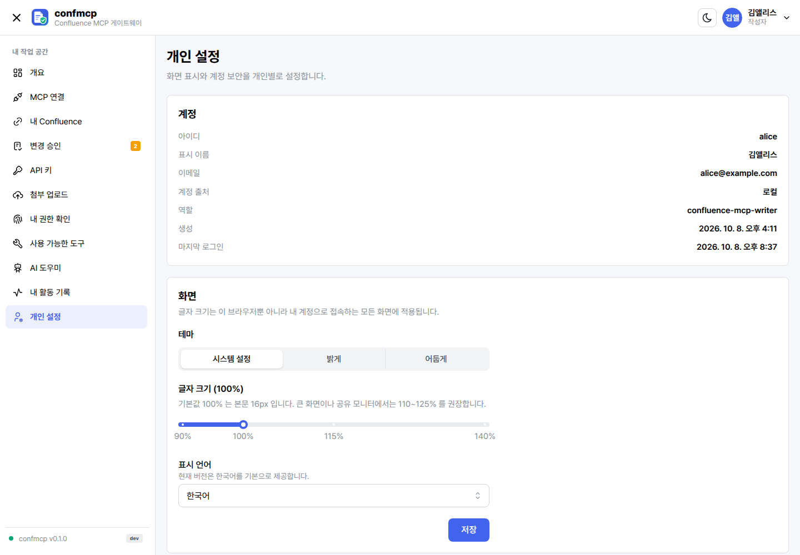
지금 쓰는 confmcp 버전은 어떻게 확인하나요?
머리글 오른쪽의 프로필 메뉴를 열면 계정 정보 아래 서비스 버전에 confmcp v0.1.1 처럼 버전과 빌드 커밋·빌드 날짜가 나옵니다. 문의할 때 이 값을 함께 알려 주십시오. 같은 정보는 /api/version 에서도 볼 수 있습니다.
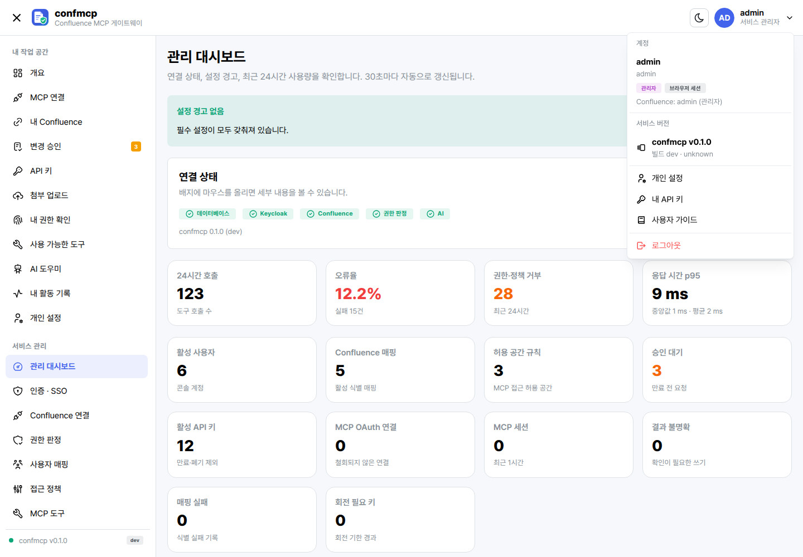
휴대폰에서도 쓸 수 있나요?
네. 좁은 화면에서는 메뉴가 왼쪽 위 버튼 뒤로 접히고, 표는 가로로 밀어 볼 수 있습니다. 변경안 확인과 승인도 휴대폰에서 할 수 있습니다.